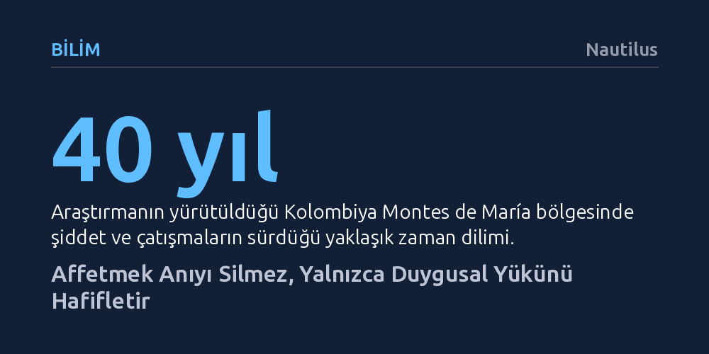

BILIM · Nautilus · 2026-10-08
Bilişsel araştırmalar, bağışlamanın geçmişteki acı olayları unutturmadığını, yalnızca anının taşıdığı olumsuz duygusal yükü ve fizyolojik tepkileri azalttığını ortaya koyuyor. Hafızadaki ayrıntılar silinmezken, zihinsel yeniden değerlendirme sayesinde suçun ağırlığından bağımsız olarak hissedilen acı hafifliyor.
Toplumda yerleşmiş 'affet ve unut' klişesinin aksine, iyileşmenin anıları silmekten değil, olayın acı veren duygusal ağırlığını zihinsel olarak dönüştürmekten geçtiğini gösterir.

Geleneksel ahlaki ve dini kabullerde bağışlama eylemi sıklıkla geçmişi bütünüyle unutmakla bir tutulur. Oysa Duke Üniversitesi'nde hafıza ve bilişsel süreçler üzerine çalışan felsefeci ve sinirbilimci Felipe de Brigard'ın araştırmaları, bu yaygın tavsiyenin zihnin işleyişiyle örtüşmediğini gösteriyor. Birini affettiğinizde o olayın olgusal ayrıntıları zihninizden silinmez; dönüşen tek unsur, anıya eşlik eden yıkıcı duygusal tepkidir.
Bilişsel bilimde hafızadaki zayıflama iki ayrı boyutta incelenir: olayın nerede ve nasıl yaşandığına dair ayrıntıların kaybolması (bölümsel solma) ile olaya bağlı hislerin yatışması (duygusal solma). Deneyler, bağışlamanın anının canlılığını ya da berraklığını azaltmadığını kanıtlıyor. Mağdur yaşanan haksızlığı tüm çıplaklığıyla hatırlamayı sürdürür; ancak anı zihne çağrıldığında eskiden tetiklenen yoğun öfke ve nefret artık aynı şiddette uyanmaz.
De Brigard'ın bulguları yalnızca sübjektif anketlere ya da kişisel beyanlara dayanmıyor. Araştırmacı, kırk yıl boyunca ağır paramiliter şiddete maruz kalan Kolombiya'nın Montes de María bölgesindeki kurbanlarla ve ABD'deki deneklerle kapsamlı çalışmalar yürüttü. Kolombiya'daki geçiş dönemi adaleti nedeniyle eski gerillalar ve paramiliter savaşçılar hapse girmek yerine köylerine dönerek eski kurbanlarıyla aynı mahallelerde yaşamaya başlamıştı; bu durum affetmeyi hayati bir toplumsal zorunluluk haline getirdi.
Araştırma ekibi, geçmiş travmaları hatırlayan bireylerin yüz kası hareketlerini, kalp atış hızlarını, solunum ritimlerini ve deri iletkenliğini hassas biyofizyolojik cihazlarla kaydetti. Sonuçlar nesnel bir gerçeği belgeledi: Affetme sürecini tamamlayan bireylerde, maruz kalınan suçun ağırlığı ne kadar büyük olursa olsun ya da faille olan kişisel yakınlık ne düzeyde bulunursa bulunsun, olumsuz duygulanım ve bedensel stres tepkileri ölçülebilir biçimde geriliyordu.
İnsan beyni bir anıyı her hatırladığında onu yeniden kurgular ve bu süreçte hafıza kayıtları değişime açık hale gelir. Bilim insanları bu esnekliği 'duygusal yeniden değerlendirme' adı verilen bir mekanizmayla avantaja çeviriyor. Bu kapsamda öne çıkan en etkili yöntemlerden biri 'aşağı yönlü karşıolgusal düşünme' stratejisidir. Bireyler kötü bir olayı anımsarken genellikle 'keşke daha iyi olsaydı' diye düşünerek pişmanlık üretir; oysa olayın 'daha da kötü nasıl sonuçlanabileceğini' hayal etmek (örneğin en azından hayatta kalındığını düşünmek) zihinde güçlü bir rahatlama duygusu yaratır.
Oluşan bu olumlu rahatlama hissi, zamanla orijinal hafıza izine eklemlenerek bir sonraki hatırlamada duyulan acıyı köreltir. Failin içtenlikle özür dilemesi affetme ihtimalini en çok artıran unsur olsa da affetmek bu duygusal dönüşümü sağlamanın tek yolu değildir. Bilişsel davranışçı terapide kullanılan zamansal mesafe koyma (olaya on yıl sonrasından bakabilme) veya deneyime yeni bir anlam yükleme gibi yöntemler de bağışlama gerçekleşmeden duygusal yükü hafifletebilir.
Araştırmanın ortaya koyduğu en kritik felsefi sonuçlardan biri, affetmenin mutlak bir ahlaki zorunluluk olmadığı gerçeğidir. Failin hayatta olmadığı, kimliğinin bilinmediği ya da toplu katliamlar gibi telafisi olanaksız cürümlerin işlendiği durumlarda bağışlama zemini tamamen ortadan kalkabilir. Dahası, kişinin kendi onurunu ayaklar altına alan her haksızlığı sorgusuz sualsiz affetmesi erdemli bir davranış sayılmaz; aksine bireyi yeni suiistimallere ve sömürüye açık hale getirebilir.
Özellikle iş ve sosyal hayat dinamiklerinde aşırı bağışlayıcı davranan bireylerin manipülasyona daha sık maruz kaldığı görülüyor. Dolayısıyla bağışlama, geçmişte düşünüldüğü gibi yalnızca kurban ile fail arasındaki ikili bir onarım ilişkisi değildir; özellikle toplumsal çatışmalarda fail, mağdur ve topluluğun dahil olduğu üçlü bir denge gerektirir. Amaç geçmişi unutup savunmasız kalmak değil, anının berraklığını korurken onun yıkıcı duygusal esaretinden kurtulmaktır.